Operações e Rotinas – McDonald’s
Nota: As imagens utilizadas se referem apenas a um teste.
Observações:
Primeiramente realizar as integrações dos PLUs através do módulo de integração “Integração de cadastros PLU”;
Após a integração dos PLUs, realizar a integração dos combos e receitas.
Explicações gerais:
Item Master = Item de estoque, compra e venda (empréstimos entre lojas)
Ex. CARNE, PAO, QUEIJO DO LANCHE.
Ingrediente = Variação de unidade de compra e código de fornecedor.
Ex. Código de unidade de compra + código de barras.
E catálogo PN (porém não integrado, pois não tem end-point SERVICE LAYER).
PLU = Item de venda.
Ex. BIG MAC.
Receita = Estrutura de produtos com o vínculo do item de venda com o item de estoque/compra.
Ex. PLUs + Master.
55 BIG MAC CARNE + QUEIJO + PAO
Combo = Vínculo de item de venda (PLU) com outro item de venda que possui receita.
Ex. Código promocional do BIG MAC (cartela/app/mercado)
999999 Big Mac - Clássicos do dia
Ex. 999999 Big Mac = 55 BIG MAC
Outras palavras, níveis de produção.
Como adicionar os cockpit da rotina e operações
Será necessário adicionar os cockpit para realização da rotina.
Acessar o Lápis.

Selecionar o +.

Na opção Todos, selecionar indicador-chave de desempenho.

Procurar os 3 cockpit: PLU Base, PLU Geral, Total Processamento Estoque, Total Processamento NF e Erro Validação (Estoque + NF).
Total de Processamento de Estoque e NF traz a visão do Big Number dos processamentos de Nota Fiscal de Saída e Estoque que estão pendentes em todas as bases.
Erro Validação Estoque e NF traz a visão do Big Number dos erros de validação de Nota Fiscal de Saída e Estoque de todas as bases, onde será necessário reprocessar esses erros conforme a operação.
PLU Base traz a visão dos PLUs contidos na base que está conectado, para serem integrados.
PLU Geral traz a visão de dos PLUs de todas as bases que tem para serem integrados.
Clicar em + para adicionar.
, chat ou mensagem de texto


Selecione um cockpit e arraste pela sua tela conforme sua preferência.
Se arrastar para a lixeira no canto inferior direito, ele será removido.


Após este processo, só clicar no ícone positivo localizado no canto superior direito e atualizar o cockpit.

Consultar os itens de Integração PLU


Company: Identificação da franquia.
PLU Integração: Código do PLU de venda, recebido através da API da ARCOS DOURADOS.
PLU Receita: Código PLU que possui vínculo com os itens controlados pelo estoque (Masters).
Tipo Integração: Combo, Receita ou Brinquedo.
Combo = Seguir primeiro o tópico “3. Realizar a integração dos PLUs dos itens não cadastrados” e depois “4. Realizar a integração dos Combos”.
Receita = Seguir primeiro o tópico “3. Realizar a integração dos PLUs dos itens não cadastrados” e depois “5. Realizar a integração das Receitas”.
Brinquedo = Seguir tópico “6. Realizar a integração dos Brinquedos”.
Integração do PLU
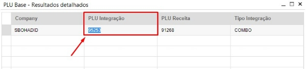Este é PLU de integração consultado no cockpit PLU BASE
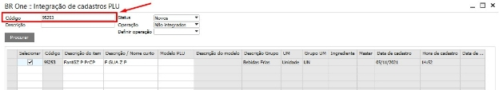Buscar o PLU de Integração na tela de integração de PLU e inserir o código no campo Código: e Clicar em Procurar.
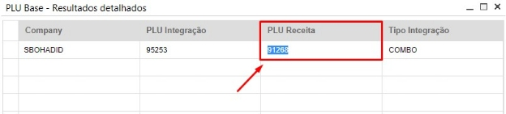Este é o PLU Receita consultado pelo cockpit PLU BASE.
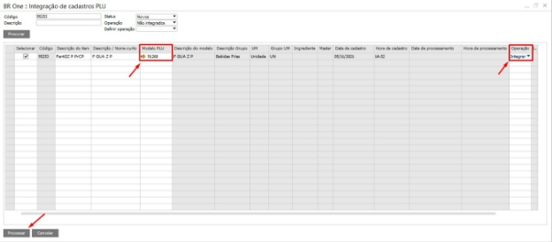Modelo PLU – PLU Receita
Observação: Sempre conferir o Status “Processados” e “Novos” caso não encontre o plu (sem resultados e coluna vazias).
No caso de **receita* é necessário cadastrar um modelo semelhante com o Grupo de Itens e Código de NCM iguais.
Código: Preencher o “PLU Integração” encontrado na tabela do cockpit.
Status: Novos ou Processados.
Operação (Cabeçalho): Não integrados.
Selecionar: Ativar o flag.
Modelo PLU: Preencher com “PLU Receita” encontrado na tabela do cockpit.
Operação (Linha): Integrar.
Processar
Realizar a integração dos Combos
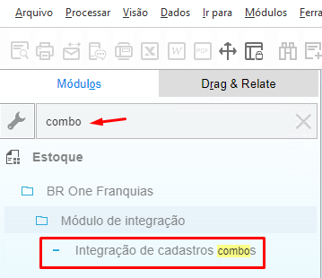

Código: Preencher o “PLU Integração” encontrado na tabela do cockpit.
Status: Novos ou Processados.
Operação (Cabeçalho): Não integrados.
Selecionar: Ativar o flag.
Operação (Linha): Integrar.
Processar.
Realizar a integração dos Combos (Tratativa de exceção)

Observação: Ao procurar o código do combo para integração e identificar as colunas “PLU SAP” e “Descrição SAP” vazias, será preciso realizar a tratativa de exceção, pesquisando em “Cadastro do item” o código do item para atualizar na aba “Integração” o flag de “Combo”.


Realizar Cadastro Manual de Receita - Combo (Tratativa de exceção)

Observação: Ao procurar o código do combo para integração e identificar as colunas vazias, será preciso realizar a tratativa de exceção, pesquisando em “Cadastro do item” o código do item.

Observação: Clique o botão direito do mouse na tela de cadastro do item para visualizar as opções e selecione “Estrutura de Produtos”.

Observação: Selecione os registros de dados (setas na barra superior) para visualizar e verificar os depósitos, por exemplo: se você realizar essa verificação e os depósitos serem “1”, você irá fazer a inserir a receita com o mesmo depósito “1”.

Observação:
Dê Ctrl + F para realizar busca.
Insira o código plu do combo em Nº do Produto e Dê Enter e faça a busca.
Em Nº do Item insira o ‘plu da receita e busque por ele para preencher os campos.
Insira o mesmo depósito da verificação realizada na etapa anterior em “Depósito”.
Realizar a integração das Receitas
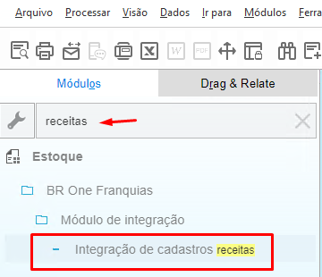

Código: Preencher o “PLU Receita” encontrado na tabela do cockpit.
Status: Novos ou Processados.
Operação (Cabeçalho): Não integrados.
Selecionar: Ativar o flag.
Operação (Linha): Integrar.
Processar.
Observação: Ao procurar o código da receita para integração e identificar as colunas “PLU SAP” e “Descrição SAP” vazias, será preciso realizar a tratativa de exceção, pesquisando em “Cadastro do item” o código do item para atualizar na aba “Integração” o flag de “Receita”.
Realizar a integração das Receitas (Tratativa de exceção)

Observação: Ao procurar o código da receita para integração e identificar as colunas “PLU SAP” e “Descrição SAP” vazias, será preciso realizar a tratativa de exceção, pesquisando em “Cadastro do item” o código do item para atualizar na aba “Integração” o flag de “Receita” e “Cadastro modelo”.

Observação:
Em Cadastro do Item buscar pelo código PLU da Receita
Ir na aba “Integração”
Ativar o flag “Cadastro modelo” e “Receita”
Copiar o Nome Estrangeiro e colar no Cadastro modelo
Dar OK e finalizar processo.
Erro de Master na integração de Receita (Tratativa de exceção)

Observação: Ao procurar o código da receita para integração e identificar as colunas o seguinte erro “Não foi possível recuperar o item master. MasterId: ‘xxxx’, será preciso realizar a tratativa de exceção, pesquisando em “Cadastro do item” o código do master para atualizar na aba “Integração”.

Observação:
Entrar no “Cadastro do Item” e “Integração”
Mudar o campo “Tipo do item” > “M – Item Master”.
Marcar Flag “Cadastro Modelo”.
Copiar a descrição e colar na descrição do modelo.
Inserir o Nº do item no “Código de Integração” (Ctrl + Shift + U – para fazer a edição nos campos bloqueados).**
Realizar a integração dos Brinquedos


Código: Preencher o “PLU Integração” encontrado tabela do cockpit.
Status: Novos ou Processados.
Operação (Cabeçalho): Não integrados.
Selecionar: Ativar o flag.
Modelo PLU: Preencher sempre com o código “95234”.
Operação (Linha): Integrar.
Processar.
Realizar a integração dos Brinquedos (Tratativa de Exceção)

Observação: Identificando a coluna Master vazia, após a integração, pesquisar o PLU em Cadastro do item e acessar a aba Integração.

Observação: Ao verificar o campo “Código master” vazio, apertar as teclas CTRL + SHIFT + U para abrir a opção “Campos definidos pelo usuário” na lateral da tela.


Observação: Preencher o campo “Código master” com a descrição Master.800 e atualizar o cadastro do item.
Interface gráfica do usuário, Texto, Aplicativo, Email

Interface gráfica do usuário, Aplicativo

Cadastrar manualmente o PLU Brinquedo
Acessar o cadastro do item no SAP.
Interface gráfica do usuário, Texto, Aplicativo
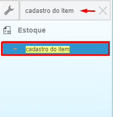Interface gráfica do usuário, Aplicativo

Pesquisar pelo modelo padrão de PLU Brinquedo “95234”.
Clicar botão direito do mouse e ir em Duplicar.
Interface gráfica do usuário, Aplicativo

Alterar o Nº do item para o código do PLU Brinquedo que está sendo integrando.
Alterar Descrição e Nome Estrangeiro para o do PLU Brinquedo.
Ir na aba Integração.
Desativar todos os flag do Tipo do item.
Interface gráfica do usuário, Aplicativo

Agora, será preciso alterar o código de integração, ingrediente e master que estão bloqueados nesta tela.
CTRL + SHIFT + U (será aberta uma tela de visão, para realizar alterações nos campos bloqueados).
Insira no código integração o do PLU Brinquedo.
Insira no código ingrediente e master o Código Ingrediente e Master caso souber. (dependendo do caso, não será necessário alterar, somente o código integração)
Interface gráfica do usuário

Clicar em adicionar e será feita a integração do PLU Brinquedo.

Realizar a integração dos Master*
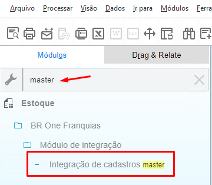Interface gráfica do usuário

Observação: Será necessário consultar um modelo para o master a ser integrado, clicando no campo “Modelo master” e apertando a tecla TAB.

Observação: Pode ser pesquisado um modelo pela “Descrição do item” ou “Código NCM” (Para trocar a busca para essas colunas, será necessário duplo clique no cabeçalho desejado).
Interface gráfica do usuário, Texto, Aplicativo


Código: Preencher o “Código do item” encontrado na consulta.
Status: Novos ou Processados.
Operação (Cabeçalho): Não integrados.
Selecionar: Ativar o flag.
Modelo master: Preencher com o master modelo encontrado na consulta.
Operação (Linha): Integrar.
Processar.
Realizar a integração dos Ingredientes
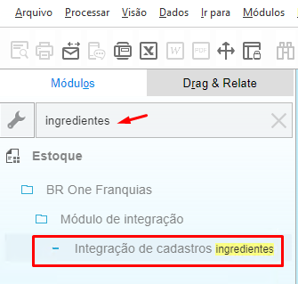
Observação: Será necessário consultar a unidade de medida para o ingrediente a ser integrado, clicando no campo “UM SAP” e apertando a tecla TAB.
Interface gráfica do usuário, Texto


Interface gráfica do usuário, Aplicativo

Código: Preencher o “Código do item” encontrado na consulta.
Status: Novos ou Processados.
Operação (Cabeçalho): Não integrados.
Selecionar: Ativar o flag.
UM SAP: Preencher com a unidade de medida do ingrediente.
Operação (Linha): Integrar.
Processar.
Realizar os Reprocessamentos de NF e Estoque
Interface gráfica do usuário, Aplicativo

Interface gráfica do usuário, Aplicativo

Descrição gerada automaticamente com confiança baixa](Aspose.Words.bdf55294-7177-4f13-b2e4-241ec30fd0e6.063.png
Loja: Selecionar a loja da base.
Tipo Log: Nota Fiscal de Saída (NF) & Baixa de Estoque (Estoque)
Interface gráfica do usuário, Texto, Aplicativo, Word
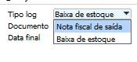Status: Não validado e Erro de processamento
Interface gráfica do usuário, Texto, Aplicativo, Email
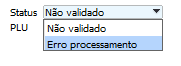Filtrar: Selecionar.
Selecionar: Ativar Flag da linha
Observação: Utilizando o SHIFT + Clicando na última linha no flag será selecionado todas as linhas.
Reprocessar.
Interface gráfica do usuário, Texto, Aplicativo, Email
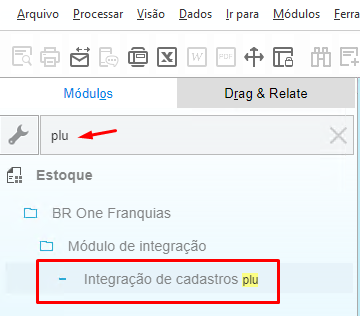